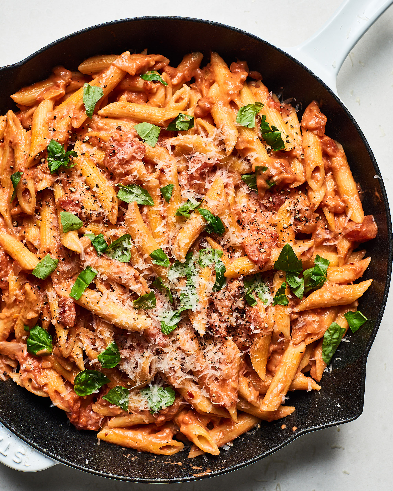
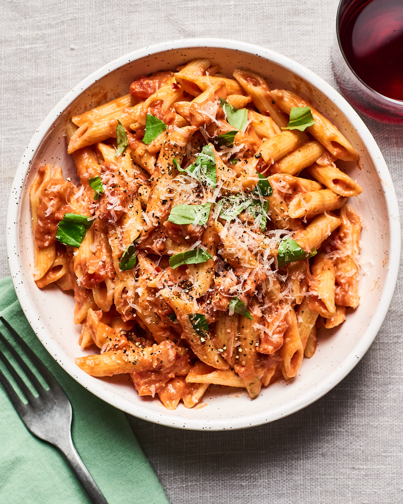

Cheesy Weekday Pasta

This creamy pasta bake is one of my favourite mid-week pasta dishes. My whole family loves it, and thers is not much prep to do!. Once the pasta bake is in the oven, you can make a salad or set the table, and then it's time to eat.
Ingredients
Here's what you'll need!
- 1 (16 ounce) package penne pasta
- 1 Tablespoon olive oil
- 1 Onion, finely chopped
- 3 cloves minced garlic
- 3 (6 ounce) cans tomato sauce
- 2 tablespoons tomato paste
- 3/4 cup heavy whipping cream
- 1/2 cup grated Parmesan cheese
- 1 pinch white sugar
- salt and freshly ground black pepper
- 1 pound cherry tomatos, halved
- 1 1/4 cups shredded mozzarella chese
- 1 small bunch fresh bsil, finely chopped
Got everything? Great! Let's get cooking.
- Preheat the oven to 400F (200C) and grease a baking dish.
- Bring a large pot of salted water to a boil. Add Penne and cook, stirring occasionally until tender, about 11 minutes.
Drain, reserving 1 cup cooking water.
- Heat olive oil in a large skillet over medium heat. Cook onion in oil until soft and translucent, about 5 minutes.
Add garlic and cook for an additional 30 seconds. Stir in tomato sauce and tomato paste and cook until slightly reduced,
about 5 minutes. Add cream and parmesan cheese. Season with sugar, salt and pepper.
- Stir some of the reserved pasta water into sauce and add cooked penne. Remove from the heat and stir in cherry tomatoes,
1/2 of the mozzarella and basil. Add more pasta water if needed to reach desired consistency. Pour penne mixture into the prepared
baking dish and cover with the remaining mozzarella cheese.
- Bake in the preheated oven until bubbly and cheese is melted, about 20 minutes
